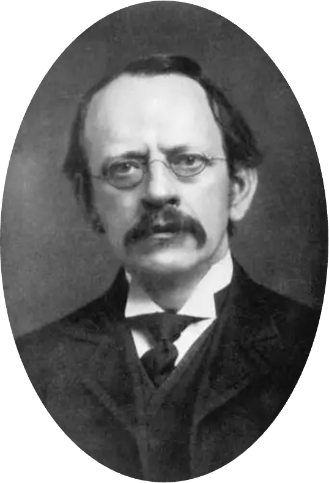

|  |
Dmitri was born on the 8th of February 1834 and died on the 2nd of February 1907 (age 72) He developed the periodic classification of the elements, he found that chemical elements were arranged in order of increasing atomic weight. The table displayed a recurring pattern or periodicity of properties within the groups of elements. He created his own version of the periodic table in 1871, he left gaps where he believed unknown elements would find their own place. Mendeleev was born on the 8th of February 1934 in the village of Verkhnie Aremzyani, near Tobollsk in Siberia, to Ivan Pavlovich Mendeleev (1783-1847) and Maria Dmitrievna Mendeleeva (1793-1850). Ivan worked as a school. Principal and a teacher of fine arts, politics and philosophy at the Tambov and Saratov gymnasiums. Mendeleev was raised as an Orthodox Christian, his mother encouraging him to "patiently search divine and scientific truth". Mendeleev was the youngest of 17 siblings, where only 14 lived. The exact number of Mendeleev's siblings differs among sources and is still a matter of some historical dispute. Unfortunately for the family's financial well-being, his father became blind and lost his teaching position. His mother was forced to work, and she restarted her family's abandoned glass factory. At the age of 13, after the passing of his father and the destruction of his mother's factory by fire, Mendeleev attended the Gymnasium in Tobolsk. |